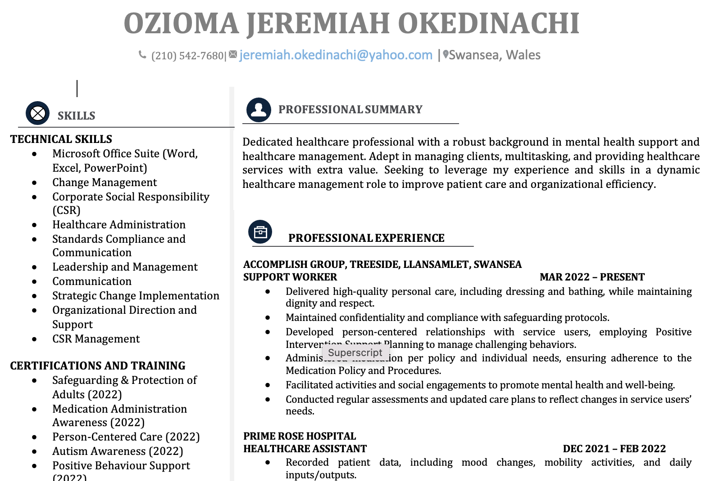

With 6 years in recruiting, I craft resumes that get results. I create ATS-friendly, clear, and visually appealing resumes, highlighting your achievements and tailoring them to specific jobs. Let me help you land your dream job with a standout resume that opens doors!
Revamped an IT security professional’s resume, emphasizing cloud security, incident response, and threat intelligence, while optimizing for ATS and tailoring content to specific cybersecurity roles.
Revamped a Senior Director's resume, enhancing clarity and showcasing strategic leadership, growth achievements, and industry expertise. Ensured ATS-friendly formatting for optimized job market impact
Revamped an Account Executive's resume for ATS optimization, quantifying achievements, highlighting cloud expertise, and enhancing keyword alignment for improved visibility and impact in competitive markets.
Revamped a Business Analyst's federal resume for ATS optimization, quantifying achievements and aligning with federal requirements. Highlighted expertise in business operations, financial consulting, and government sector experience.
Created an ATS-friendly resume and cover letter for a Therapy Director, emphasizing her medical expertise and skills to support her transition into a part-time Med Spa role.
Crafted a results-driven resume emphasizing expertise in business analysis and QA, highlighting achievements in project management, Agile methodologies, and multi-level testing.
Crafted a results-driven resume emphasizing expertise in business analysis and QA, highlighting achievements in project management, Agile methodologies, and multi-level testing.
Crafted a results-driven resume emphasizing expertise in business analysis and QA, highlighting achievements in project management, Agile methodologies, and multi-level testing.

Optimized professional resume for Ozioma Jeremiah Okedinachi, highlighting extensive experience in healthcare support, patient care, and compliance.
Revamped internal wholesaler resume highlighting data-driven sales strategies and client relationship management, showcasing expertise in territory management and sales growth.